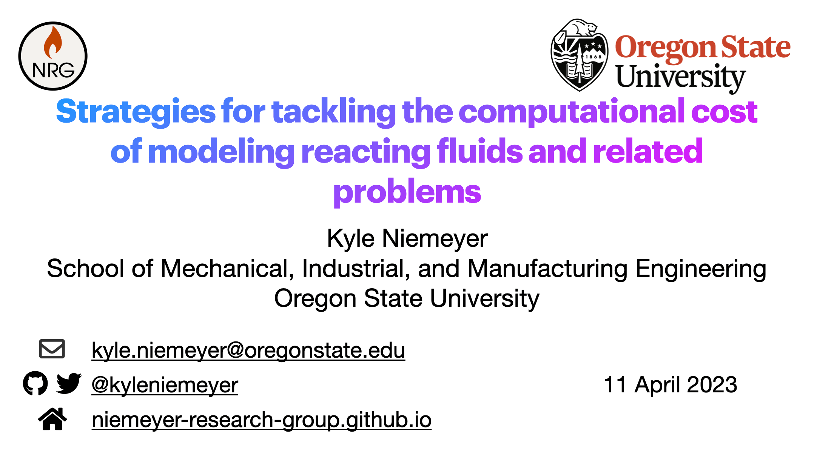
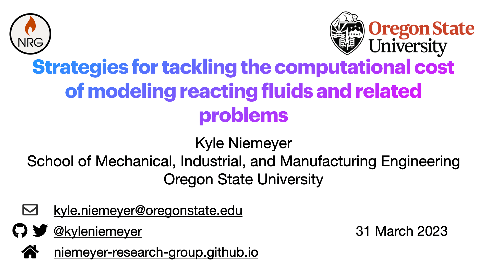
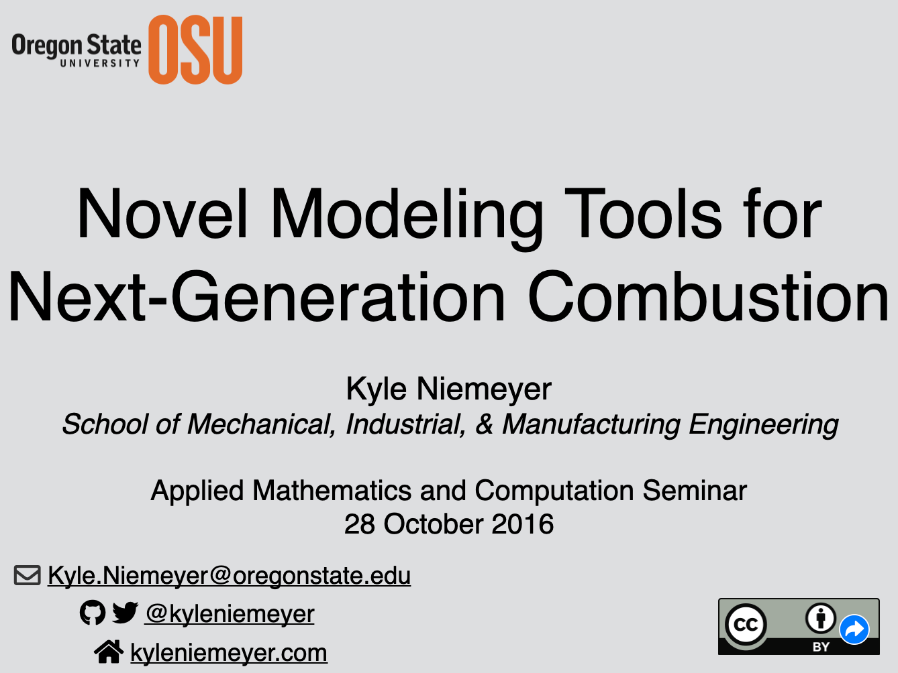
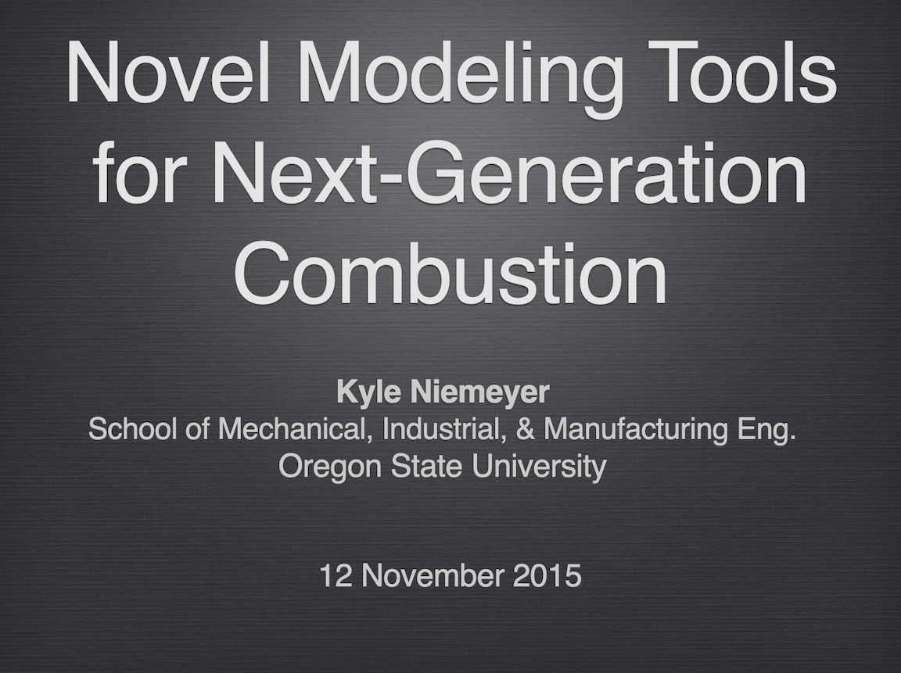
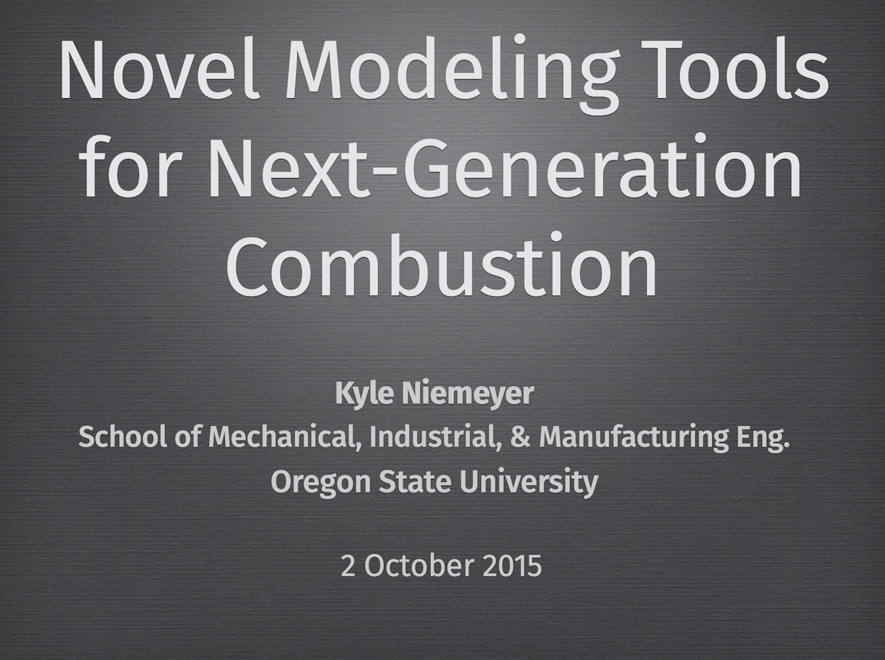

Kyle E. Niemeyer, Ph.D.
he/him/hisAssociate Professor
Welty Faculty Fellow
Associate Head for Undergraduate Programs
School of Mechanical, Industrial, and Manufacturing Engineering
Oregon State University
Associate Editor-in-Chief, JOSS
email ⋅ mastadon
These are my upcoming and past keynotes and invited talks.
Right Onsite: Accelerating deployment of onsite clean energy technology in the industrial sector
2023 ACEEE Summer Study on Energy Efficiency in Industry
Jul 12, 2023
Conference talk based on a program I supported while working at the US Department of Energy, seeking to accelerate the adoption of clean onsite energy systems in industry.
2023 ACEEE Summer Study on Energy Efficiency in Industry
Jul 12, 2023
Conference talk based on a program I supported while working at the US Department of Energy, seeking to accelerate the adoption of clean onsite energy systems in industry.

Strategies for tackling the computational cost of modeling reacting fluids and related problems
Department of Mechanical Engineering, Pennsylvania State University
Apr 11, 2023
Invited department seminar describing my group's work on numerical methods in combustion, and how we extend methods developed in this field to others.
Department of Mechanical Engineering, Pennsylvania State University
Apr 11, 2023
Invited department seminar describing my group's work on numerical methods in combustion, and how we extend methods developed in this field to others.

Strategies for tackling the computational cost of modeling reacting fluids and related problems
Department of Mechanical & Aerospace Engineering, Case Western Reserve University
Mar 31, 2023
Invited department seminar describing my group's work on numerical methods in combustion, and how we extend methods developed in this field to other domains.
Department of Mechanical & Aerospace Engineering, Case Western Reserve University
Mar 31, 2023
Invited department seminar describing my group's work on numerical methods in combustion, and how we extend methods developed in this field to other domains.
Strategies for tackling the computational cost of modeling reacting fluids and related problems
Department of Mechanical Engineering, University of Connecticut
Jan 27, 2023
Invited department seminar describing my group's work on numerical methods in combustion, and how we extend methods developed in this field to others.
Department of Mechanical Engineering, University of Connecticut
Jan 27, 2023
Invited department seminar describing my group's work on numerical methods in combustion, and how we extend methods developed in this field to others.
Using JupyterBooks for interactive teaching and fun
Academic Data Science Alliance (ADSA) Education special interest group
Apr 22, 2021
Invited talk describing my approach to combining live handwritten lectures with JupyterBooks for examples and online references.
Academic Data Science Alliance (ADSA) Education special interest group
Apr 22, 2021
Invited talk describing my approach to combining live handwritten lectures with JupyterBooks for examples and online references.
Strategies for tackling the computational cost of modeling reacting fluids
Engineering Lecture Series, University of Wisconsin-Stout
Apr 1, 2021
Describes the challenges of performing accurate simulations of combustion and reacting fluid flows, which require handling complex, large, and stiff chemical kinetic models. Also reviews work my group has done to tackle these and related problems.
Engineering Lecture Series, University of Wisconsin-Stout
Apr 1, 2021
Describes the challenges of performing accurate simulations of combustion and reacting fluid flows, which require handling complex, large, and stiff chemical kinetic models. Also reviews work my group has done to tackle these and related problems.
How to Make Friends and Influence People with Open Science
Boulder Fluid and Thermal Sciences Seminar Series, University of Colorado, Boulder
Mar 11, 2019
Provides an overview on how to practice open science in your research: making your publications open access, archiving your data openly, and sharing your open-source research software. Also talks about the benefits of working openly.
Boulder Fluid and Thermal Sciences Seminar Series, University of Colorado, Boulder
Mar 11, 2019
Provides an overview on how to practice open science in your research: making your publications open access, archiving your data openly, and sharing your open-source research software. Also talks about the benefits of working openly.
Background and recent progress in using detailed chemical kinetics for numerical combustion modeling
Department of Aerospace Engineering, Texas A&M University
Oct 12, 2018
Describes how modern combustion and reacting-flow simulations represent chemical kinetics, and discusses the challenges of using accurate, detailed kinetic models. Reviews techniques for accommodating large, detailed kinetic models in numerical combustion simulations, including model reduction/simplification, tabulation, and use of improved integration algorithms, and presents some perspectives for the future of chemical kinetics in numerical combustion.
Department of Aerospace Engineering, Texas A&M University
Oct 12, 2018
Describes how modern combustion and reacting-flow simulations represent chemical kinetics, and discusses the challenges of using accurate, detailed kinetic models. Reviews techniques for accommodating large, detailed kinetic models in numerical combustion simulations, including model reduction/simplification, tabulation, and use of improved integration algorithms, and presents some perspectives for the future of chemical kinetics in numerical combustion.
Best practices for sustainable and open research software in computational research ★ Keynote
CGU, CSSS, CIG, ES-SSA, & CSAFM 2018 Joint Meeting
Jun 11, 2018
This talk discusses principles of software citation, venues for sharing and publication of research software, and best practices for reproducibility in computational research. In addition, shares strategies for ensuring sustainability of software projects.
CGU, CSSS, CIG, ES-SSA, & CSAFM 2018 Joint Meeting
Jun 11, 2018
This talk discusses principles of software citation, venues for sharing and publication of research software, and best practices for reproducibility in computational research. In addition, shares strategies for ensuring sustainability of software projects.
Incorporating detailed chemistry in reactive-flow simulations by exploiting system stiffness and processor architecture
Boulder Fluid and Thermal Sciences Seminar Series, University of Colorado, Boulder
Mar 22, 2018
A revised version of my talk given at UT Austin in 2017. Summarizes work on complementary efforts to reduce the computational expense of integrating chemical kinetics in reacting-flow and combustion simulations using modern processing architectures.
Boulder Fluid and Thermal Sciences Seminar Series, University of Colorado, Boulder
Mar 22, 2018
A revised version of my talk given at UT Austin in 2017. Summarizes work on complementary efforts to reduce the computational expense of integrating chemical kinetics in reacting-flow and combustion simulations using modern processing architectures.
New community standards and open tools for chemical kinetics
Combustion Chemistry Centre, National University of Ireland, Galway
Aug 29, 2017
Describes a pair of related, collaborative projects for a standardized method of describing fundamental combustion experimental measurements in a human- and machine-readable way (and tools for working with such data), and a study that uses these tools to examine the impacts of discrepancies in model parameters found across the literature.
Combustion Chemistry Centre, National University of Ireland, Galway
Aug 29, 2017
Describes a pair of related, collaborative projects for a standardized method of describing fundamental combustion experimental measurements in a human- and machine-readable way (and tools for working with such data), and a study that uses these tools to examine the impacts of discrepancies in model parameters found across the literature.
Enabling next-generation combustion simulations by intelligent integration
Institute for Computational Engineering and Sciences, University of Texas at Austin
Jul 26, 2017
Summarizes work on complementary efforts to reduce the computational expense of integrating chemical kinetics in reacting-flow and combustion simulations using modern processing architectures.
Institute for Computational Engineering and Sciences, University of Texas at Austin
Jul 26, 2017
Summarizes work on complementary efforts to reduce the computational expense of integrating chemical kinetics in reacting-flow and combustion simulations using modern processing architectures.
Software in science and engineering research: the case for open source and proper citation
Research Computing Seminar Series, Oregon State University
May 8, 2017
This talk discusses principles of software citation, venues for sharing and publication of research software, and best practices for reproducibility in computational research.
Research Computing Seminar Series, Oregon State University
May 8, 2017
This talk discusses principles of software citation, venues for sharing and publication of research software, and best practices for reproducibility in computational research.

Novel modeling tools for next-generation combustion
Applied Mathematics and Computation Seminar, Oregon State University
Oct 28, 2016
Talks about why we need to study combustion and reactive-flow modeling, and the challenges of accurate modeling; also describes my efforts to reduce the cost of accurate chemistry in reactive-flow simulations, in particular reducing the size of chemical models and developing new strategies for exploiting GPUs.
Applied Mathematics and Computation Seminar, Oregon State University
Oct 28, 2016
Talks about why we need to study combustion and reactive-flow modeling, and the challenges of accurate modeling; also describes my efforts to reduce the cost of accurate chemistry in reactive-flow simulations, in particular reducing the size of chemical models and developing new strategies for exploiting GPUs.
Making effective use of graphics processing units (GPUs) in computations
Research Computing Seminar Series, Oregon State University
Mar 7, 2016
This seminar explores the use of GPUs in general, describe examples of the use of GPUs in computations, and introduce some best practices for GPU computing.
Research Computing Seminar Series, Oregon State University
Mar 7, 2016
This seminar explores the use of GPUs in general, describe examples of the use of GPUs in computations, and introduce some best practices for GPU computing.

Novel computational modeling tools for next-generation combustion
Department of Mechanical and Civil Engineering, Caltech
Nov 12, 2015
Talks about why we need to study combustion and reactive-flow modeling, and the challenges of accurate modeling; also describes my efforts to reduce the cost of accurate chemistry in reactive-flow simulations, in particular reducing the size of chemical models and developing new strategies for exploiting GPUs.
Department of Mechanical and Civil Engineering, Caltech
Nov 12, 2015
Talks about why we need to study combustion and reactive-flow modeling, and the challenges of accurate modeling; also describes my efforts to reduce the cost of accurate chemistry in reactive-flow simulations, in particular reducing the size of chemical models and developing new strategies for exploiting GPUs.

Novel computational modeling tools for next-generation combustion
Department of Chemical Engineering, The University of Utah
Oct 2, 2015
This is a slightly updated version of the talk I gave at Caltech about my research.
Department of Chemical Engineering, The University of Utah
Oct 2, 2015
This is a slightly updated version of the talk I gave at Caltech about my research.
Copyright Kyle E. Niemeyer. See this site's GitHub repository to view source and provide feedback.